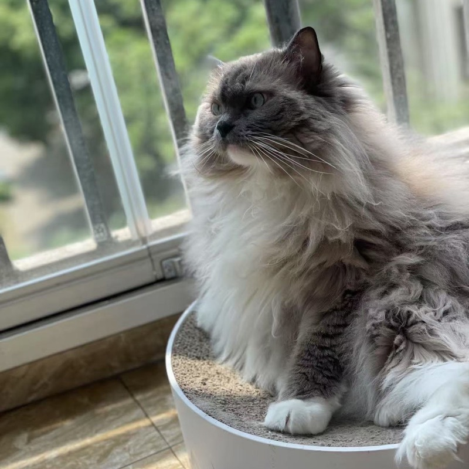

Yuchen Zhu
Ph.D. Candidate in Economics · University of Florida
On the 2026–2027 Job MarketI am a Ph.D. candidate in Economics at the University of Florida. My research interests are in labor economics, econometrics, and applied microeconomics.
Job Market Paper
Predicting College Major Switching with Machine Learning
Before starting my Ph.D., I earned an M.S. in Economics from Johns Hopkins University and a B.A. in Economics (with a minor in Statistics) from the University of Illinois Urbana-Champaign.
Thank you for visiting my page — feel free to explore my research and get in touch!
Experience
Ph.D. Research Experience
- Research Assistant to Robert AinsworthSpring 2024 – Fall 2024
- Research Assistant to David SappingtonSpring 2023 – Summer 2024
- Research Assistant to Javier DonnaSpring 2023
CV
The latest version of my curriculum vitae is available as a PDF.
Life
